pacman::p_load(sf, tidyverse, tmap)Hands-on Exercise 2
Loading Packages
Import Geospatial Data
mpsz <- st_read(dsn = "data/geospatial",
layer = "MP14_SUBZONE_WEB_PL")Reading layer `MP14_SUBZONE_WEB_PL' from data source
`C:\Users\Home\Desktop\bjyeo\IS415-GeospatialAnalytics\HandsOnEx\Ex02\data\geospatial'
using driver `ESRI Shapefile'
Simple feature collection with 323 features and 15 fields
Geometry type: MULTIPOLYGON
Dimension: XY
Bounding box: xmin: 2667.538 ymin: 15748.72 xmax: 56396.44 ymax: 50256.33
Projected CRS: SVY21mpszSimple feature collection with 323 features and 15 fields
Geometry type: MULTIPOLYGON
Dimension: XY
Bounding box: xmin: 2667.538 ymin: 15748.72 xmax: 56396.44 ymax: 50256.33
Projected CRS: SVY21
First 10 features:
OBJECTID SUBZONE_NO SUBZONE_N SUBZONE_C CA_IND PLN_AREA_N
1 1 1 MARINA SOUTH MSSZ01 Y MARINA SOUTH
2 2 1 PEARL'S HILL OTSZ01 Y OUTRAM
3 3 3 BOAT QUAY SRSZ03 Y SINGAPORE RIVER
4 4 8 HENDERSON HILL BMSZ08 N BUKIT MERAH
5 5 3 REDHILL BMSZ03 N BUKIT MERAH
6 6 7 ALEXANDRA HILL BMSZ07 N BUKIT MERAH
7 7 9 BUKIT HO SWEE BMSZ09 N BUKIT MERAH
8 8 2 CLARKE QUAY SRSZ02 Y SINGAPORE RIVER
9 9 13 PASIR PANJANG 1 QTSZ13 N QUEENSTOWN
10 10 7 QUEENSWAY QTSZ07 N QUEENSTOWN
PLN_AREA_C REGION_N REGION_C INC_CRC FMEL_UPD_D X_ADDR
1 MS CENTRAL REGION CR 5ED7EB253F99252E 2014-12-05 31595.84
2 OT CENTRAL REGION CR 8C7149B9EB32EEFC 2014-12-05 28679.06
3 SR CENTRAL REGION CR C35FEFF02B13E0E5 2014-12-05 29654.96
4 BM CENTRAL REGION CR 3775D82C5DDBEFBD 2014-12-05 26782.83
5 BM CENTRAL REGION CR 85D9ABEF0A40678F 2014-12-05 26201.96
6 BM CENTRAL REGION CR 9D286521EF5E3B59 2014-12-05 25358.82
7 BM CENTRAL REGION CR 7839A8577144EFE2 2014-12-05 27680.06
8 SR CENTRAL REGION CR 48661DC0FBA09F7A 2014-12-05 29253.21
9 QT CENTRAL REGION CR 1F721290C421BFAB 2014-12-05 22077.34
10 QT CENTRAL REGION CR 3580D2AFFBEE914C 2014-12-05 24168.31
Y_ADDR SHAPE_Leng SHAPE_Area geometry
1 29220.19 5267.381 1630379.3 MULTIPOLYGON (((31495.56 30...
2 29782.05 3506.107 559816.2 MULTIPOLYGON (((29092.28 30...
3 29974.66 1740.926 160807.5 MULTIPOLYGON (((29932.33 29...
4 29933.77 3313.625 595428.9 MULTIPOLYGON (((27131.28 30...
5 30005.70 2825.594 387429.4 MULTIPOLYGON (((26451.03 30...
6 29991.38 4428.913 1030378.8 MULTIPOLYGON (((25899.7 297...
7 30230.86 3275.312 551732.0 MULTIPOLYGON (((27746.95 30...
8 30222.86 2208.619 290184.7 MULTIPOLYGON (((29351.26 29...
9 29893.78 6571.323 1084792.3 MULTIPOLYGON (((20996.49 30...
10 30104.18 3454.239 631644.3 MULTIPOLYGON (((24472.11 29...
Output Behaviour
When we call mpsz, only the first 10 records are shown because the object is too large to be displayed in its entirety. By default, R only displays the first 10 records.
Import Attribute Data
popdata <- read_csv("data/aspatial/respopagesextod2011to2020.csv")Rows: 984656 Columns: 7
── Column specification ────────────────────────────────────────────────────────
Delimiter: ","
chr (5): PA, SZ, AG, Sex, TOD
dbl (2): Pop, Time
ℹ Use `spec()` to retrieve the full column specification for this data.
ℹ Specify the column types or set `show_col_types = FALSE` to quiet this message.Calling spec on a dataframe displays its structure, including the data types of each column.
spec(popdata)cols(
PA = col_character(),
SZ = col_character(),
AG = col_character(),
Sex = col_character(),
TOD = col_character(),
Pop = col_double(),
Time = col_double()
)Data Preparation
Data Wrangling
As part of data preparation, we will use: * pivot_wider to convert the data from long to wide format * mutate, filter, group_by and select to clean and filter the data
We do not need to import tidyr or dplyr because they are already loaded as part of the tidyverse package.
popdata2020 <- popdata %>%
filter(Time == 2020) %>%
group_by(PA, SZ, AG) %>%
summarise(`POP` = sum(`Pop`)) %>%
ungroup() %>%
pivot_wider(names_from = AG, values_from = POP) %>%
mutate(`YOUNG` = rowSums(.[3:6]) + rowSums(.[14])) %>%
mutate(`ECONOMY ACTIVE` = rowSums(.[7:13])+rowSums(.[15])) %>%
mutate(`AGED` = rowSums(.[16:21])) %>%
mutate(`TOTAL` = rowSums(.[3:21])) %>%
mutate(`DEPENDENCY` = (`YOUNG` + `AGED`)/`ECONOMY ACTIVE`) %>%
select(`PA`, `SZ`, `YOUNG`, `ECONOMY ACTIVE`, `AGED`, `TOTAL`, `DEPENDENCY`)`summarise()` has grouped output by 'PA', 'SZ'. You can override using the
`.groups` argument.
Code Analysis
The above code looks daunting, so let’s try to break down what it’s doing.
- Filter data for only year 2020 from the dataset
- Group data by PA (Planning Area), SZ (Subzone), AG (Age Group). We use
group_byto prepare data for summarization - Calculate total population for each unique combination of PA, SZ, AG
- Call
pivot_widerto transform data from long to wide. Resultingly, each unique value in AG becomes a new column, with POP values filling the cells. This creates a table where each row represents a unique PA-SZ combination, with columns for each age group - Calculate new demographic variables (YOUNG, ECONOMY ACTIVE, AGED, TOTAL, DEPENDENCY)
- Finally, select columns for the output dataset; keeping only key demographic summary variables and identifiers
Merging Geospatial and Attribute Data
Using mutate_at, we convert the PA and SZ columns to uppercase. This is to ensure consistency in the data before merging with the geospatial data. The .vars argument refers to the columns to be modified, while the .funs argument specifies the function applied.
popdata2020 <- popdata2020 |>
mutate_at(.vars = vars(PA, SZ),
.funs = list(toupper)) |>
filter(`ECONOMY ACTIVE` > 0)Next, call left_join to join the geospatial data and attribute data on planning subzone name.
mpsz_pop2020 <- left_join(mpsz, popdata2020,
by = c("SUBZONE_N" = "SZ"))The write_rds command saves the merged dataset as an RDS file for future loading.
write_rds(mpsz_pop2020, "data/mpsz_pop2020.rds")Plotting Choropleth Maps
Hacky method of plotting choropleth maps
The first approach we can utilize is using qtm from the tmap package.
tmap_mode("plot")tmap mode set to plottingqtm(mpsz_pop2020, fill = "DEPENDENCY")
Using tmap elements
Instead of using qtm, we can use tm_shape and tm_fill to create a choropleth map. One advantage of this approach is the ability to customize the map layout and elements.
tm_shape(mpsz_pop2020)+
tm_fill("DEPENDENCY",
style = "quantile",
palette = "Blues",
title = "Dependency ratio") +
tm_layout(main.title = "Distribution of Dependency Ratio by planning subzone",
main.title.position = "center",
main.title.size = 1.2,
legend.height = 0.45,
legend.width = 0.35,
frame = TRUE) +
tm_borders(alpha = 0.5) +
tm_grid(alpha =0.2) +
tm_credits("Source: Planning Sub-zone boundary from Urban Redevelopment Authorithy (URA)\n and Population data from Department of Statistics DOS",
position = c("left", "bottom"))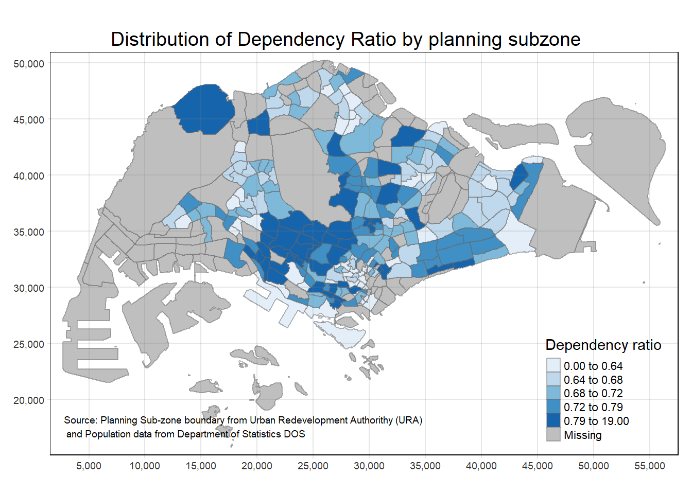
Drawing base map
tm_polygons() can be used to show the base map without any fill. This may be useful when we want to show only the boundaries of the planning subzones.
tm_shape(mpsz_pop2020) +
tm_polygons()
Drawing chloropleth map using tm_polygons()
Here, we use tm_polygons() to draw a choropleth map based on the DEPENDENCY variable. The darker highlighted regions represent planning subzones with higher dependency ratios.
tm_shape(mpsz_pop2020) +
tm_polygons("DEPENDENCY")
Drawing chloropleth map using tm_fill()
Instead of using tm_polygons(), we can use tm_fill() to draw the choropleth map. This function allows us to specify the fill color based on the DEPENDENCY variable. We might want to use fill over polygons when the boundaries are not the main focus of the map.
tm_shape(mpsz_pop2020) +
tm_fill("DEPENDENCY")
Drawing chloropleth map with tm_borders()
By adding borders to the chloropleth map, we can better distinguish between planning subzones. The tm_borders() function allows us to customize the border line width and transparency.
Aside from line width and transparency, we can also specify the border color using the col argument.
tm_shape(mpsz_pop2020) +
tm_fill("DEPENDENCY") +
tm_borders(lwd = 0.1, alpha = 1, col = "darkgreen")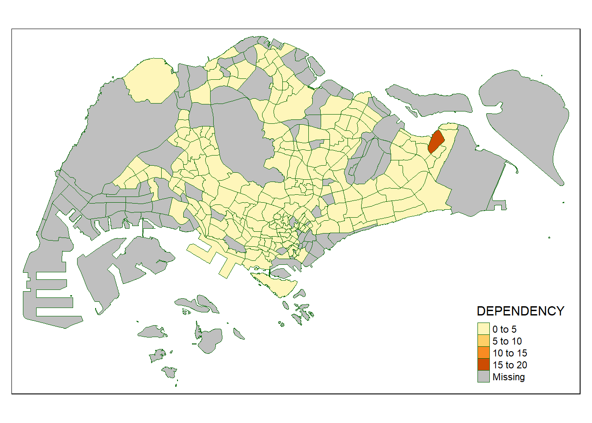
Data Classifications
Using built-in methods
Without specifying the number of classes, tm_fill() will use the default classification method. In this case, it uses the quantile method to classify the data.
tm_shape(mpsz_pop2020) +
tm_fill("DEPENDENCY",
n = 5,
style = "quantile",
palette = "plasma") +
tm_borders(alpha = 0.5)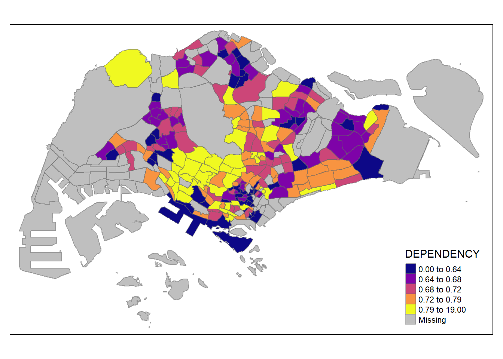
tm_shape(mpsz_pop2020) +
tm_fill("DEPENDENCY",
n = 5,
style = "equal") +
tm_borders(alpha = 0.5)
DIY: Comparison of classification methods
Using what you had learned, prepare choropleth maps by using different classification methods supported by tmap and compare their differences. Prepare a grid showing the maps side by side of different tmap styles.
# Create maps with different classification methods
map_fixed <- tm_shape(mpsz_pop2020) +
tm_fill("DEPENDENCY", style = "fixed") +
tm_borders(alpha = 0.5) +
tm_layout(title = "Fixed")
map_sd <- tm_shape(mpsz_pop2020) +
tm_fill("DEPENDENCY", style = "sd") +
tm_borders(alpha = 0.5) +
tm_layout(title = "Standard Deviation")
map_equal <- tm_shape(mpsz_pop2020) +
tm_fill("DEPENDENCY", style = "equal") +
tm_borders(alpha = 0.5) +
tm_layout(title = "Equal Interval")
map_pretty <- tm_shape(mpsz_pop2020) +
tm_fill("DEPENDENCY", style = "pretty") +
tm_borders(alpha = 0.5) +
tm_layout(title = "Pretty (Default)")
map_quantile <- tm_shape(mpsz_pop2020) +
tm_fill("DEPENDENCY", style = "quantile") +
tm_borders(alpha = 0.5) +
tm_layout(title = "Quantile")
map_kmeans <- tm_shape(mpsz_pop2020) +
tm_fill("DEPENDENCY", style = "kmeans") +
tm_borders(alpha = 0.5) +
tm_layout(title = "K-means")
map_hclust <- tm_shape(mpsz_pop2020) +
tm_fill("DEPENDENCY", style = "hclust") +
tm_borders(alpha = 0.5) +
tm_layout(title = "Hierarchical Clustering")
map_bclust <- tm_shape(mpsz_pop2020) +
tm_fill("DEPENDENCY", style = "bclust") +
tm_borders(alpha = 0.5) +
tm_layout(title = "Bagged Clustering")
map_fisher <- tm_shape(mpsz_pop2020) +
tm_fill("DEPENDENCY", style = "fisher") +
tm_borders(alpha = 0.5) +
tm_layout(title = "Fisher-Jenks")
map_jenks <- tm_shape(mpsz_pop2020) +
tm_fill("DEPENDENCY", style = "jenks") +
tm_borders(alpha = 0.5) +
tm_layout(title = "Jenks (Natural Breaks)")tmap_arrange(map_hclust, map_bclust, map_fisher, map_jenks, ncol=2)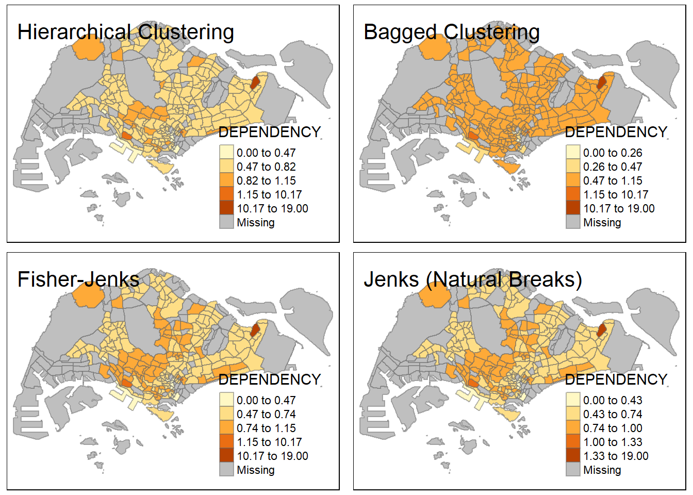
Committee Member: 1(1) 2(1) 3(1) 4(1) 5(1) 6(1) 7(1) 8(1) 9(1) 10(1)
Computing Hierarchical ClusteringWe can see from above that the different classification methods result in different choropleth maps. The choice of classification method can affect how the data is represented and interpreted.
Here we are concerned with the distribution of dependency ratios. In my opinion, using the jenks classification method provides a clearer representation of the data distribution since it groups the data into classes based on natural breaks.
DIY: Comparison of different numbered classes
Using the same dataset, prepare choropleth maps with different numbers of classes and compare their differences. Prepare a grid showing the maps side by side with different numbers of classes.
# Create maps with different number of classes
map_2c <- tm_shape(mpsz_pop2020) +
tm_fill("DEPENDENCY", n = 3, style = "pretty") +
tm_borders(alpha = 0.5) +
tm_layout(title = "2 Classes")
map_6c <- tm_shape(mpsz_pop2020) +
tm_fill("DEPENDENCY", n = 4, style = "pretty") +
tm_borders(alpha = 0.5) +
tm_layout(title = "6 Classes")
map_10c <- tm_shape(mpsz_pop2020) +
tm_fill("DEPENDENCY", n = 5, style = "pretty") +
tm_borders(alpha = 0.5) +
tm_layout(title = "10 Classes")
map_20c <- tm_shape(mpsz_pop2020) +
tm_fill("DEPENDENCY", n = 10, style = "pretty") +
tm_borders(alpha = 0.5) +
tm_layout(title = "20 Classes")tmap_arrange(map_2c, map_6c, map_10c, map_20c, ncol=2)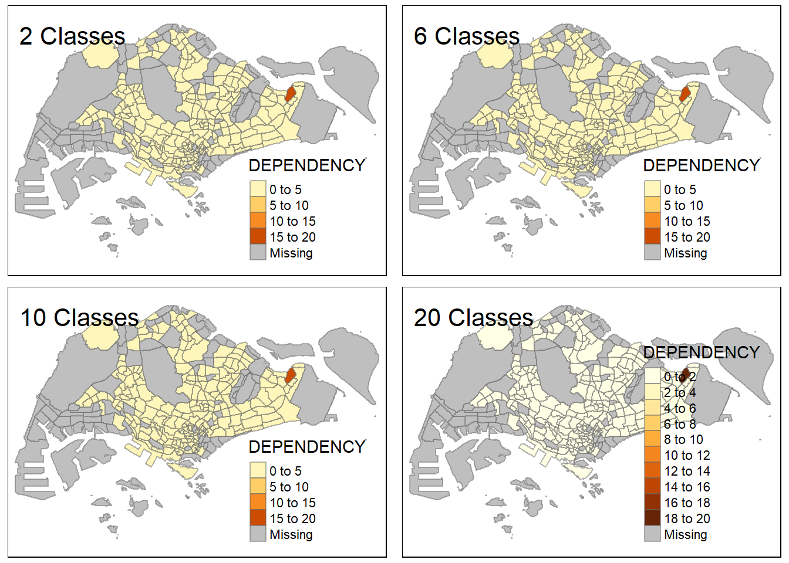
When we add more classes, the map becomes more detailed, but it may also become harder to interpret. The map with 2 classes is too simplistic, while the map with 20 classes is too detailed to tell the finer differences between the colors on the map.
Using custom breaks
summary(mpsz_pop2020$DEPENDENCY) Min. 1st Qu. Median Mean 3rd Qu. Max. NA's
0.0000 0.6519 0.7025 0.7742 0.7645 19.0000 92 tm_shape(mpsz_pop2020) +
tm_fill("DEPENDENCY",
breaks = c(0, 0.60, 0.70, 0.80, 0.90, 1.00)) +
tm_borders(alpha = 0.5)Warning: Values have found that are higher than the highest break
Color Schemes
Exploring Color Palettes
Running the code chunk below opens an interactive Shiny app that allows you to explore different color palettes offered by default in RColorBrewer.
Knowing what color palettes are available can help you choose the most appropriate one for your data visualization. For example, some of the best color palettes to use to when presenting data to colorblind individuals are viridis, cividis, and colorblind.
# pacman::p_load(shiny, shinyjs)
#
# tmaptools::palette_explorer()ColorBrewer Palette
tm_shape(mpsz_pop2020) +
tm_fill("DEPENDENCY",
n = 6,
style = "quantile",
palette = "Greens") +
tm_borders(alpha = 0.5)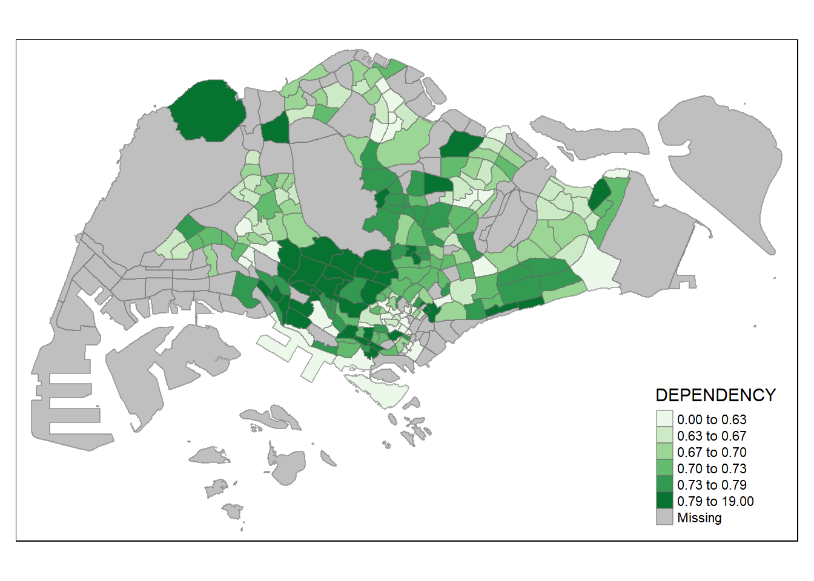
Reverse ColorBrewer Palette
Adding the reverse argument to the palette parameter will reverse the color scheme. This can be useful to highlight the highest values with a lighter color.
tm_shape(mpsz_pop2020)+
tm_fill("DEPENDENCY",
style = "quantile",
palette = "-Greens") +
tm_borders(alpha = 0.5)
Viridis Palette
tm_shape(mpsz_pop2020) +
tm_fill("DEPENDENCY",
style = "quantile",
palette = "viridis") +
tm_borders(alpha = 0.5)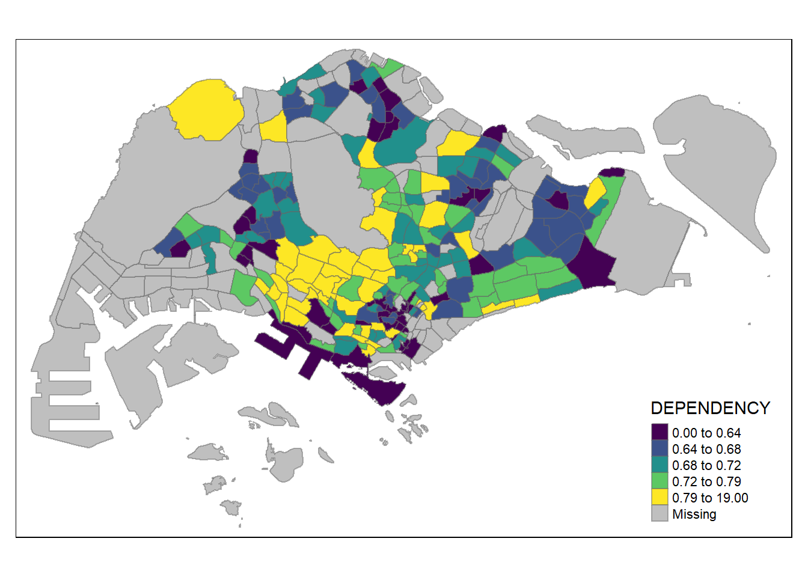
Map Layouts
Adding Map Legend
tm_shape(mpsz_pop2020) +
tm_fill("DEPENDENCY",
style = "jenks",
palette = "Blues",
legend.hist = TRUE,
legend.is.portrait = TRUE,
legend.hist.z = 0.1) +
tm_layout(main.title = "Distribution of Dependency Ratio by planning subzone \n(Jenks classification)",
main.title.position = "center",
main.title.size = 1,
legend.height = 0.45,
legend.width = 0.35,
legend.outside = FALSE,
legend.position = c("right", "bottom"),
frame = FALSE) +
tm_borders(alpha = 0.5)
Map Style
tm_shape(mpsz_pop2020) +
tm_fill("DEPENDENCY",
style = "quantile",
palette = "-Greens") +
tm_borders(alpha = 0.5) +
tmap_style("natural")tmap style set to "natural"other available styles are: "white", "gray", "cobalt", "col_blind", "albatross", "beaver", "bw", "classic", "watercolor" 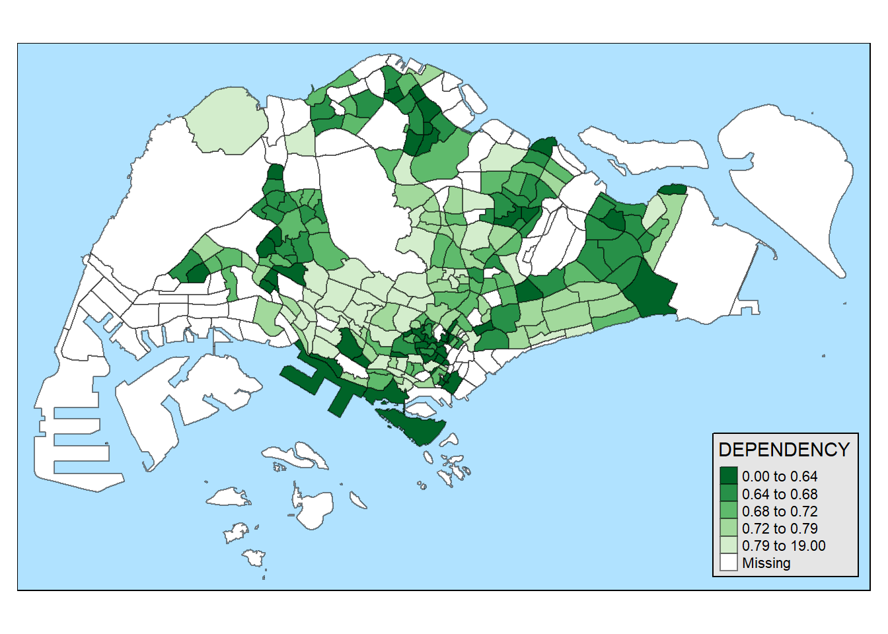
Adding Scale Bar
tm_shape(mpsz_pop2020) +
tm_fill("DEPENDENCY",
style = "quantile",
palette = "-Greens") +
tm_borders(alpha = 0.5) +
tm_scale_bar(width = 0.15)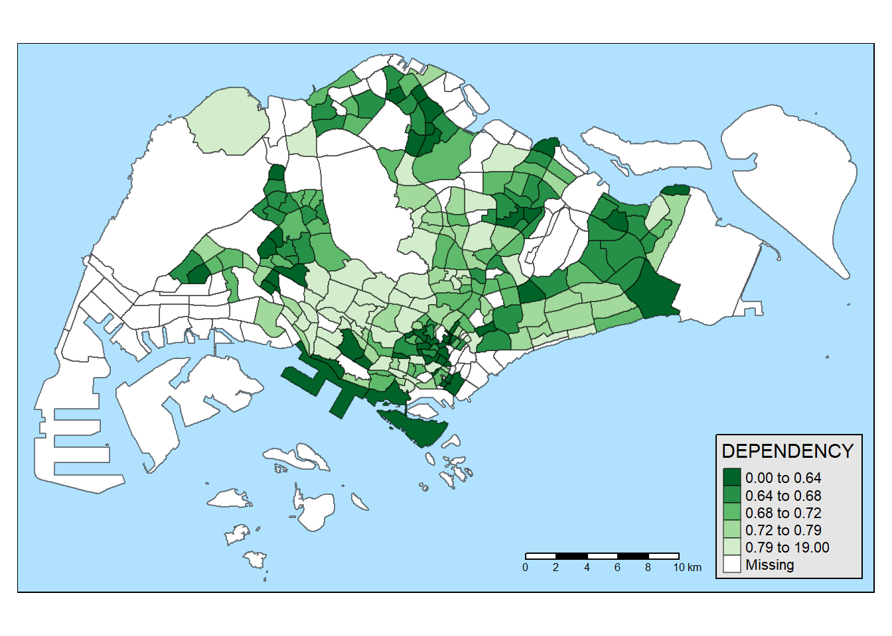
Cartographic Elements
tm_shape(mpsz_pop2020) +
tm_fill("DEPENDENCY",
style = "quantile",
palette = "-Greens") +
tm_borders(alpha = 0.5) +
tm_compass(type="8star", size = 2) +
tm_scale_bar(width = 0.15) +
tm_grid(lwd = 0.1, alpha = 0.2) +
tm_credits("Source: Planning Sub-zone boundary from Urban Redevelopment Authorithy (URA)\n and Population data from Department of Statistics DOS",
position = c("left", "bottom"))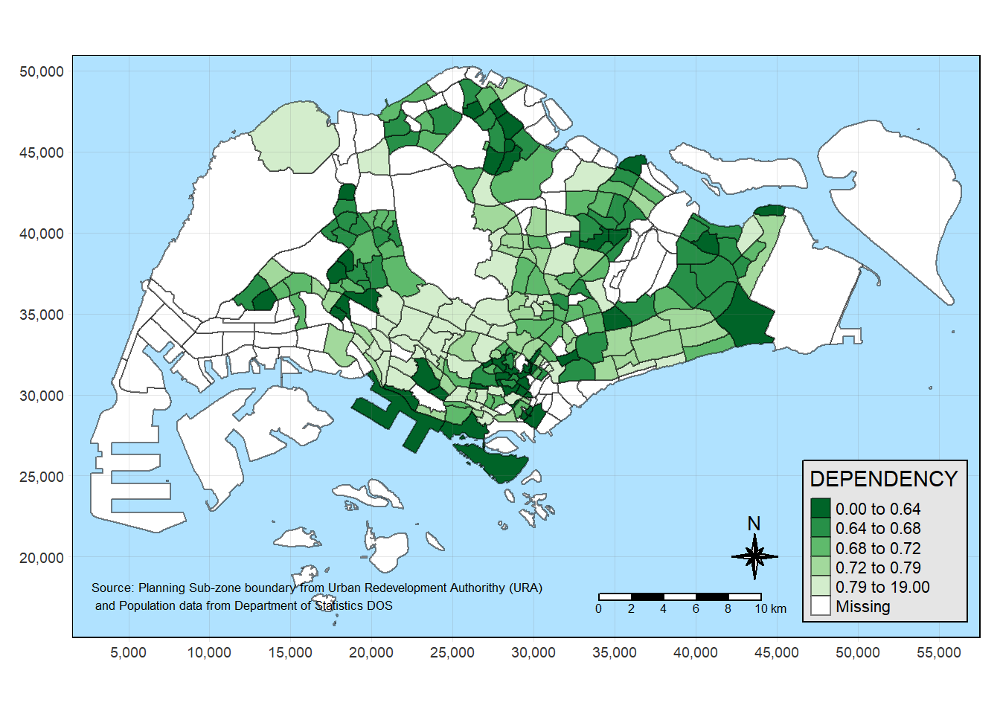
Plotting Multiple Chloropleth Maps
Here, we are plotting 2 maps side by side to represent the distribution of young and aged populations in planning subzones.
tm_shape(mpsz_pop2020)+
tm_fill(c("YOUNG", "AGED"),
style = "equal",
palette = "Blues") +
tm_layout(legend.position = c("right", "bottom")) +
tm_borders(alpha = 0.5) +
tmap_style("white")tmap style set to "white"other available styles are: "gray", "natural", "cobalt", "col_blind", "albatross", "beaver", "bw", "classic", "watercolor" 
Defining group_by variable in tm_facets()
Here, we use the tm_facets() function to create maps for each region in Singapore.
tm_shape(mpsz_pop2020) +
tm_fill("DEPENDENCY",
style = "quantile",
palette = "Blues",
thres.poly = 0) +
tm_facets(by="REGION_N",
free.coords=TRUE,
drop.shapes=TRUE) +
tm_layout(legend.show = FALSE,
title.position = c("center", "center"),
title.size = 20) +
tm_borders(alpha = 0.5)Warning: The argument drop.shapes has been renamed to drop.units, and is
therefore deprecated
Using tm_arrange()
Instead of using tm_facets(), we can use tm_arrange() to create multiple maps side by side. This function allows us to arrange maps in a grid layout.
youngmap <- tm_shape(mpsz_pop2020)+
tm_polygons("YOUNG",
style = "quantile",
palette = "Blues")
agedmap <- tm_shape(mpsz_pop2020)+
tm_polygons("AGED",
style = "quantile",
palette = "Blues")
tmap_arrange(youngmap, agedmap, asp=1, ncol=2)
Mapping Spatial Object based on Selection Criterion
What we are trying to do here is to plot a choropleth map of the Central Region based on the dependency ratio. The legend is a histogram that shows the distribution of dependency ratios in the region.
tm_shape(mpsz_pop2020[mpsz_pop2020$REGION_N == "CENTRAL REGION", ])+
tm_fill("DEPENDENCY",
style = "quantile",
palette = "Blues",
legend.hist = TRUE,
legend.is.portrait = TRUE,
legend.hist.z = 0.1) +
tm_layout(legend.outside = TRUE,
legend.height = 0.45,
legend.width = 5.0,
legend.position = c("right", "bottom"),
frame = FALSE) +
tm_borders(alpha = 0.5)Warning in pre_process_gt(x, interactive = interactive, orig_crs =
gm$shape.orig_crs): legend.width controls the width of the legend within a map.
Please use legend.outside.size to control the width of the outside legend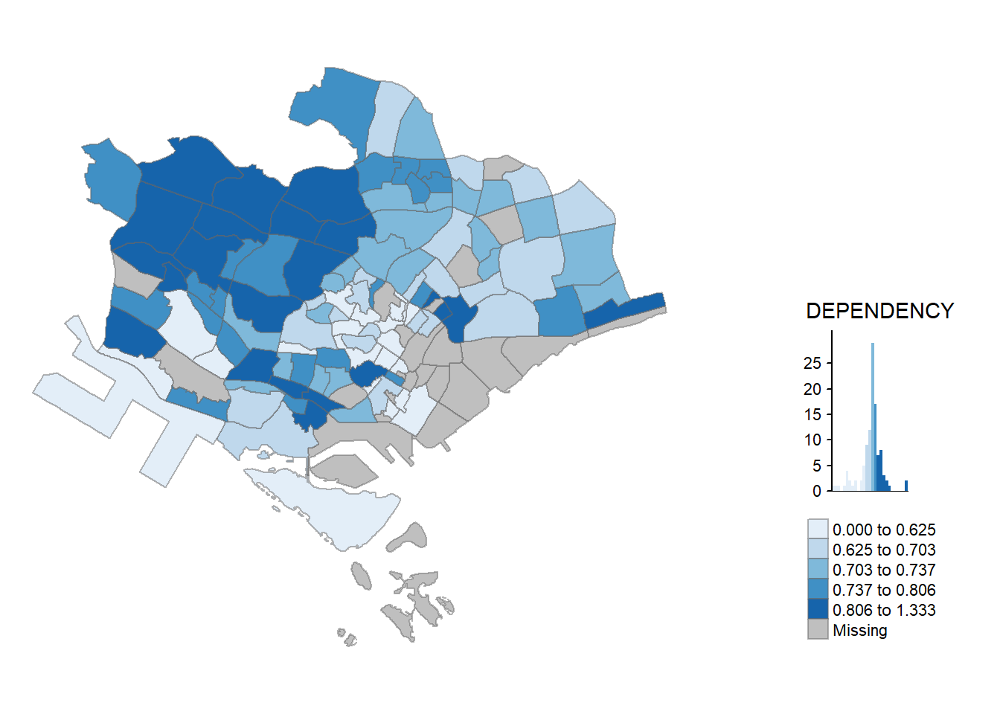